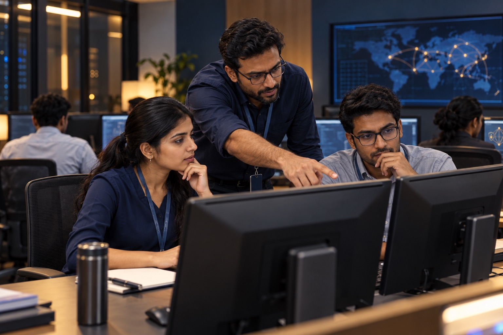

Human-led intervention
Specialists investigate the situation, interpret evidence and coordinate a response. Technology supports the work; people take responsibility for the next step.
Human-led cyber defence for India’s critical sectors—bringing digital forensics, cyber skills development and managed cybersecurity under one roof.
Sauvira was built from the conviction that India’s critical sectors need a defence partner who understands local operating realities and can intervene when a threat demands action.
From executive deepfakes and impersonation to compromised credentials and financial fraud, our work brings human judgement to situations that need investigation, coordination and follow-through.
Specialists investigate the situation, interpret evidence and coordinate a response. Technology supports the work; people take responsibility for the next step.
Digital forensics and cybercrime investigation help establish the facts, preserve evidence and support coordination with legal advisers and relevant authorities.
Cyber skills development helps internal teams recognise threats, reduce avoidable errors and carry lessons from incidents into everyday practice.
Swipe to explore →

Managed cybersecurity and proactive external threat visibility, including credential exposure and impersonation risks.
Techno-legal incident response, digital forensics and cybercrime investigation when evidence and decisive action matter.

Cyber labs, hands-on training and awareness that strengthen an organisation’s internal capability.
Every environment is different. Our approach starts with what matters to you and turns that understanding into practical next steps.
Map your environment, priorities and the risks that need attention.
Define a proportionate plan around your most important exposures.
Implement controls, investigate incidents or develop your team’s capability.
Review outcomes and turn lessons into better ongoing readiness.
Swipe to explore →
Founded and led Etek International’s India operations in 2021. Following a successful value-creation journey, the business was acquired by a leading U.S. technology company.
Leads operations and strategy, sales, profit and loss, and technology alliances.
A former Naval Intelligence Officer, Commodore Sharma serves on Sauvira’s defence advisory board.
Guides defence engagement strategy and relationships with large temple trusts, police establishments and state governments.
Brings expertise in cybercrime investigation and digital forensics, connecting technical evidence with the needs of law enforcement and judicial processes.
Guides investigation and forensics, training and awareness, strategic alliances, and engagement with state governments, law enforcement agencies and the judiciary.
Discuss your organisation’s exposure,
response needs or capability goals.